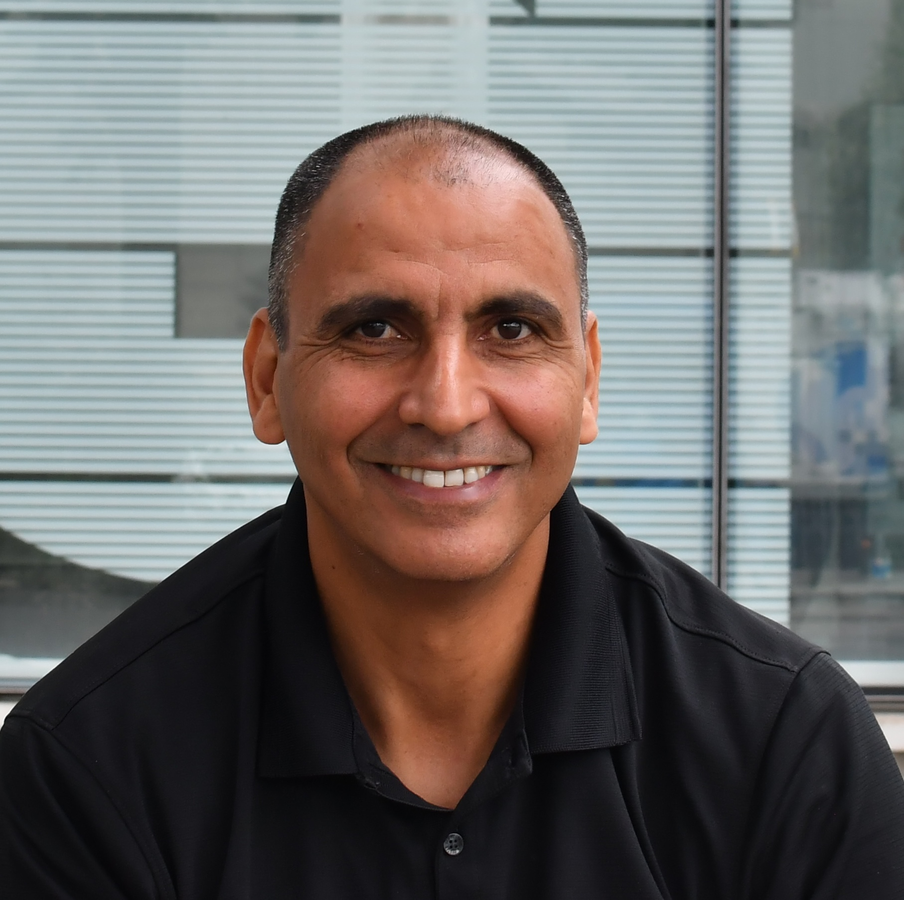

Prof Mariella Herberstein
Professor at the Leibniz Institute for the Analysis of Biodiversity Change (LIB). University of Hamburg, Germany.
Mariella studies various aspects of the behavioural ecology of arachnids and insects, with a special interest in their social behaviours and ecological interactions. She heads the Centre for Taxonomy & Morphology at LIB, Hamburg.
Mariella will head our annual DEI (Diversity, Equity, and Inclusion) seminar

Dr Jonathan Henshaw
Professor at the Faculty of Biology. University of Freiburg, Germany.
Jonathan's research applies analytical and simulation models to study the evolution of animal traits and behaviours, focusing on sexual selection and the dynamics of mating systems, parental care, and fertilisation strategies.
Jonathan will head a bird-watching tour for the participants

Dr Edyta Sadowska
Leading Physiological Ecology lab at Institute of Environmental Sciences. Jagiellonian University, Poland.
Edyta explores how evolution shapes the physiological and metabolic strategies that enable animals to cope with the challenges of life using diverse model organisms like zebra finches, bank voles, and tits.
Edyta will head a workshop on ethics in ecology and evolution

Dr Abderrahman Khila
Leading the Evolutionary and Developmental Genomics team at the Institute of Functional Genomics. Lyon, France.
Abderrahman investigates the role of molecular and developmental genetic processes and their interplay with selection in driving the evolution of phenotypes.
He studies water striders for this research, and utilises an array of methods from transcriptomics to epigenetics.
Abderrahman will lead our scientific writing workshop.
EMPSEB recognises the value of diversity in research, perspectives and approaches.
Past meetings have brought together researchers from a variety of backgrounds and cultures, enriching the conference with a range of global perspectives.
To further celebrate and strengthen this commitment, EMPSEB 31 will host a dedicated diversity, equity and inclusion (DEI) seminar.
This session will provide a space for participants to share experiences, ask questions and discuss important issues around equitable access and diverse voices in science.
We invite you to join a leisurely field trip to the beautiful Fichtelberg area as we explore the birds in the area with Dr Henshaw.
Take a stroll through German mountains, discover the local avian biodiversity and enjoy the chance to connect with fellow participants in a relaxed, natural setting.
An important skill to develop and add to their academic toolkit for PhD researchers is how to communicate their science effectively to their peers, especially with the articles
they have to regularly author. Join Dr Khila to learn the tips and tricks you need to up your scientific writing game!
Scientists in biology often face ethical dilemmas about using animals for their studies. Young researchers, like PhD students, frequently grapple with these concerns across multiple projects.
Dr Sadowska outlines and discusses the questions we need to ask ourselves and actions we must take to ensure that our contributions to science are as cruelty-free as possible!
| Name | Workshop 1 | Workshop 2 |
|---|---|---|
| Agnieszka Szwarczynska | Scientific Writing | Ethics in Ecology and Evolution |
| Aindrila Das | Scientific Writing | Ethics in Ecology and Evolution |
| Akanksha Singh | Scientific Writing | Bird Watching 2 |
| Ana Sofia Torres Lara | Scientific Writing | Bird Watching 2 |
| Anaswara K S | Scientific Writing | Ethics in Ecology and Evolution |
| Arya Dhiman | Scientific Writing | Ethics in Ecology and Evolution |
| Aryadevi Anitha Shaji | Scientific Writing | Ethics in Ecology and Evolution |
| Bartłomiej Molasy | Bird Watching 1 | Ethics in Ecology and Evolution |
| Bin Zhao | Bird Watching 1 | Ethics in Ecology and Evolution |
| Chandan Relekar Thukaram | Scientific Writing | Ethics in Ecology and Evolution |
| Charlotte Andrew | Bird Watching 1 | Ethics in Ecology and Evolution |
| Daniela Eugenia Nerelli | Scientific Writing | Ethics in Ecology and Evolution |
| Davide Piazza | Scientific Writing | Ethics in Ecology and Evolution |
| Dean Hodapp | Scientific Writing | Ethics in Ecology and Evolution |
| Debapriya Dari | Scientific Writing | Ethics in Ecology and Evolution |
| Dennis Vlegels | Bird Watching 1 | Ethics in Ecology and Evolution |
| Dheeraj Halali | Bird Watching 1 | Ethics in Ecology and Evolution |
| Diana Catherine Gonzalez Ramirez | Scientific Writing | Bird Watching 2 |
| Diana Rojas Guerrero | Bird Watching 1 | Ethics in Ecology and Evolution |
| Elisa Barreiro-Docío | Scientific Writing | Ethics in Ecology and Evolution |
| Elisabeth Stryckmans | Bird Watching 1 | Ethics in Ecology and Evolution |
| Emily Ann Dovydaitis | Bird Watching 1 | Ethics in Ecology and Evolution |
| Emily M. Booms | Scientific Writing | Ethics in Ecology and Evolution |
| Emma Laval | Scientific Writing | Ethics in Ecology and Evolution |
| Eva Adina Baumgarten | Scientific Writing | Ethics in Ecology and Evolution |
| Fatima Jlil | Bird Watching 1 | Ethics in Ecology and Evolution |
| Florian Robert Schmidt | Scientific Writing | Bird Watching 2 |
| Gabin Calmet | Scientific Writing | Ethics in Ecology and Evolution |
| Giulia Lin | Scientific Writing | Bird Watching 2 |
| Ioannis Chrysostomakis | Scientific Writing | Ethics in Ecology and Evolution |
| István Oszoli | Scientific Writing | Bird Watching 2 |
| Juho Kökkö | Scientific Writing | Ethics in Ecology and Evolution |
| Katarzyna Potera | Scientific Writing | Ethics in Ecology and Evolution |
| Kathryn Bullough | Scientific Writing | Bird Watching 2 |
| Lauren Amillicent Young | Bird Watching 1 | Ethics in Ecology and Evolution |
| Leopold Preuß | Scientific Writing | Ethics in Ecology and Evolution |
| Li-Wen Chu | Scientific Writing | Ethics in Ecology and Evolution |
| Lina Marie Raubold | Scientific Writing | Ethics in Ecology and Evolution |
| Marzena Marszałek | Scientific Writing | Ethics in Ecology and Evolution |
| Maxence Remérand | Scientific Writing | Ethics in Ecology and Evolution |
| Melina Sophia Welling | Scientific Writing | Ethics in Ecology and Evolution |
| Michelle Borgers | Bird Watching 1 | Ethics in Ecology and Evolution |
| Mona Huguenin | Bird Watching 1 | Ethics in Ecology and Evolution |
| Nancy Choudhary | Scientific Writing | Ethics in Ecology and Evolution |
| Nicholas Armeni | Scientific Writing | Bird Watching 2 |
| Nikita Tikhomirov | Bird Watching 1 | Ethics in Ecology and Evolution |
| Nils Sternberg | Scientific Writing | Ethics in Ecology and Evolution |
| Paula Mora-Rojas | Scientific Writing | Bird Watching 2 |
| Pauline Jennert Orschel | Scientific Writing | Ethics in Ecology and Evolution |
| Piyumi Sandaruwani De Alwis | Scientific Writing | Ethics in Ecology and Evolution |
| Ríona Burke | Scientific Writing | Ethics in Ecology and Evolution |
| Robin von Allmen | Scientific Writing | Ethics in Ecology and Evolution |
| Romane Gout | Scientific Writing | Ethics in Ecology and Evolution |
| Safira Moog | Scientific Writing | Ethics in Ecology and Evolution |
| Samuel Nestor Meckoni | Scientific Writing | Ethics in Ecology and Evolution |
| Shivali | Scientific Writing | Bird Watching 2 |
| Šimon Roubal | Bird Watching 1 | Ethics in Ecology and Evolution |
| Sofia Costa | Scientific Writing | Bird Watching 2 |
| Soumya Panyam | Scientific Writing | Ethics in Ecology and Evolution |
| Stefano Lapadula | Scientific Writing | Bird Watching 2 |
| Suhaas Sehgal | Scientific Writing | Bird Watching 2 |
| Suzie Tallon | Scientific Writing | Bird Watching 2 |
| Temitope Oriowo | Scientific Writing | Ethics in Ecology and Evolution |
| Tereza Anna Javůrková | Bird Watching 1 | Ethics in Ecology and Evolution |
| Théo Ulve | Scientific Writing | Ethics in Ecology and Evolution |
| Tim David | Scientific Writing | Bird Watching 2 |
| Tim Prezelj | Scientific Writing | Ethics in Ecology and Evolution |
| Titouan Bouinier | Scientific Writing | Bird Watching 2 |
| Tomas Pavlica | Scientific Writing | Ethics in Ecology and Evolution |
| Triveni Shelke | Scientific Writing | Bird Watching 2 |
| Veronika Andriienko | Bird Watching 1 | Ethics in Ecology and Evolution |
| Vinayaka Hegde | Scientific Writing | Bird Watching 2 |
| Vitali Razumov | Bird Watching 1 | Ethics in Ecology and Evolution |
| Yara Maquitico Rocha | Scientific Writing | Ethics in Ecology and Evolution |
| Yi Sun | Scientific Writing | Ethics in Ecology and Evolution |
| Zeynep Oguzhan | Scientific Writing | Bird Watching 2 |
| Zuzana Rottová | Bird Watching 1 | Ethics in Ecology and Evolution |